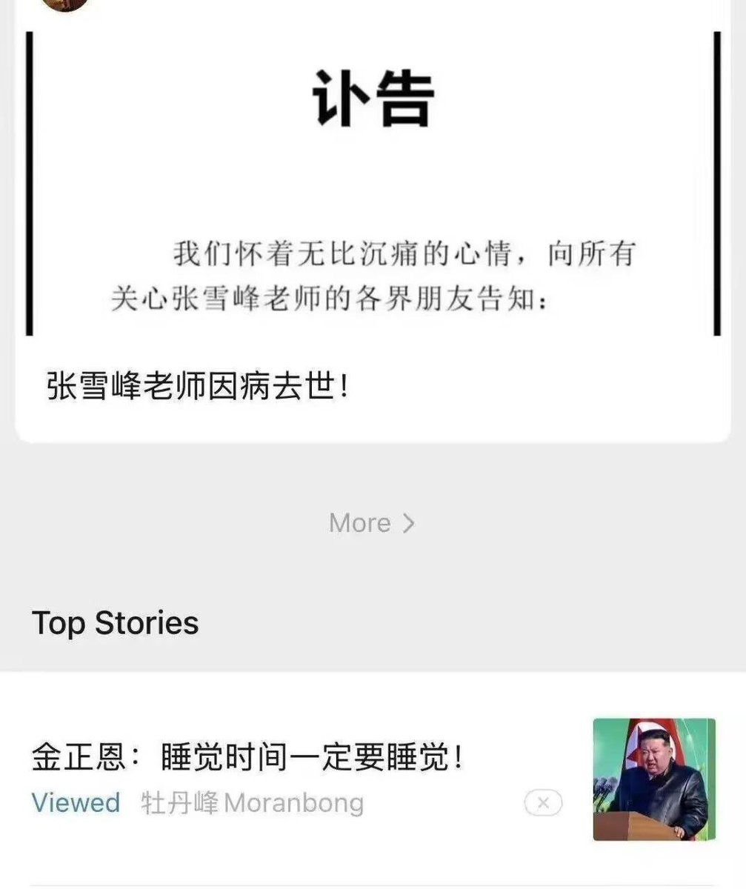
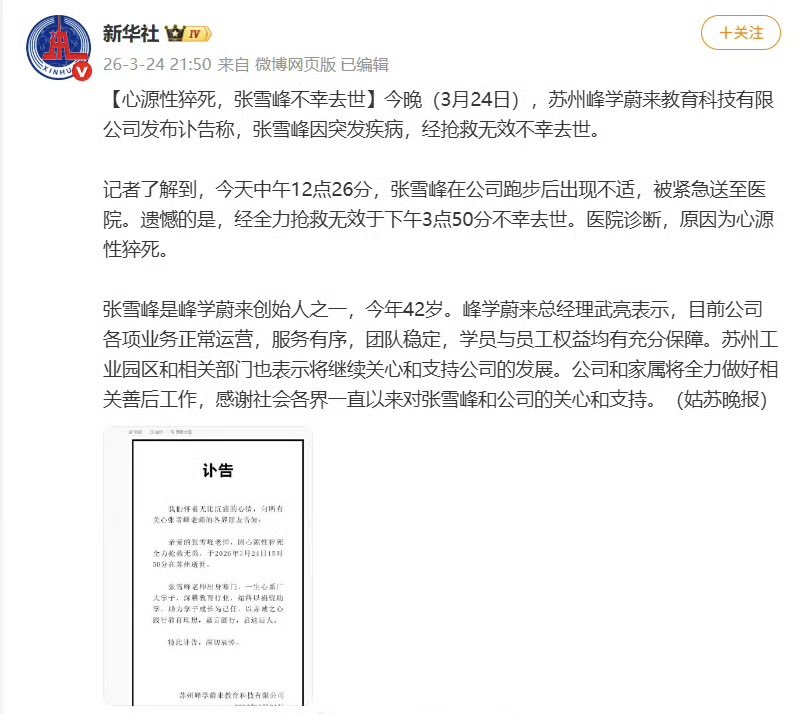
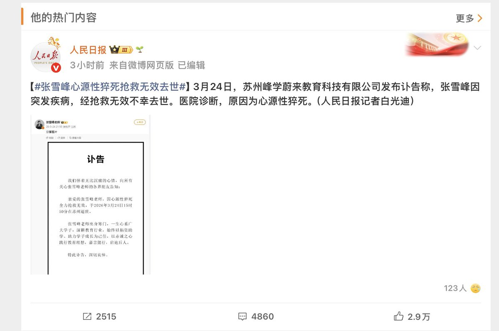
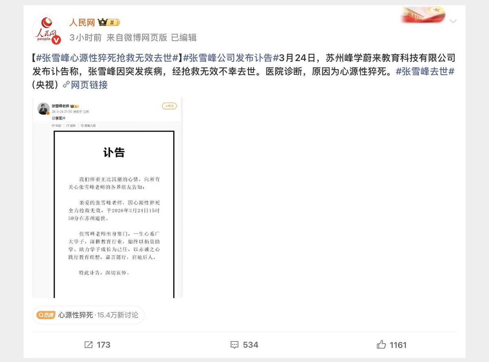
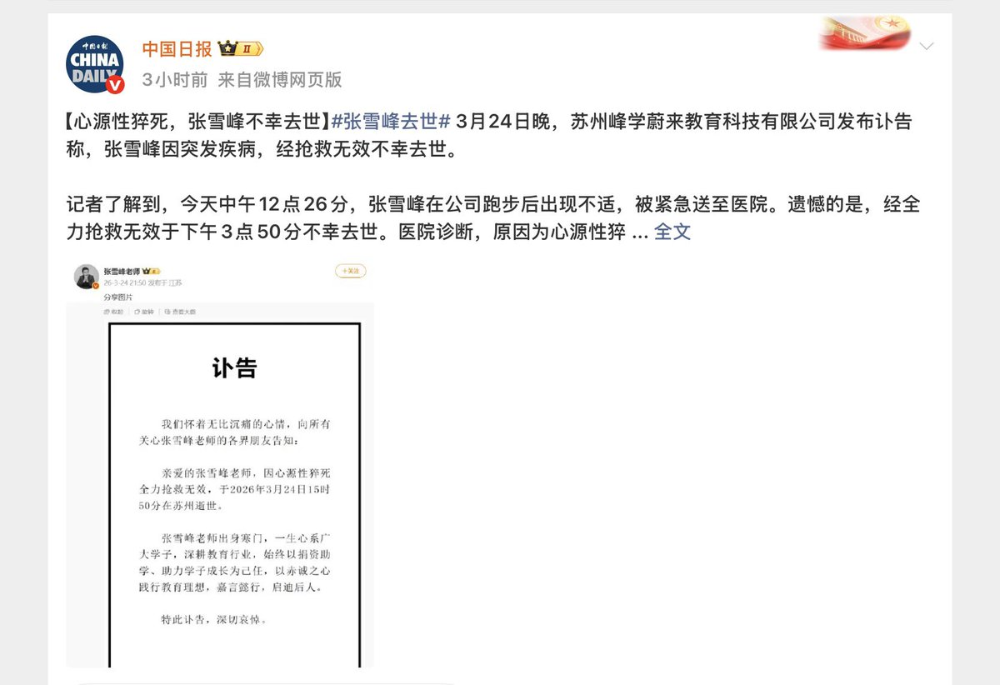

别说中国的官媒了，太卷不好！
连朝鲜之声广播电台（微信公众号：牡丹峰Moranbong）都劝你，睡觉时间一定要睡觉！
累了，就不做了、睡大觉，第二天重新来过🥱

连朝鲜之声广播电台（微信公众号：牡丹峰Moranbong）都劝你，睡觉时间一定要睡觉！
累了，就不做了、睡大觉，第二天重新来过🥱





国社集体发讣告，死后哀荣，#张雪峰配享太庙👍
人民日报、新华社、人民网、央视新闻、参考消息、中国日报等全部发了讣告，死后哀荣，一介平民，身后事上了几乎所有国媒，实属罕见，难怪网友调侃配享太庙
这说明张雪峰尽管争议较多，官方还是给他一个极高待遇
背后原因或许应该观察～～ https://t.co/JSYoJVNOYW
人民日报、新华社、人民网、央视新闻、参考消息、中国日报等全部发了讣告，死后哀荣，一介平民，身后事上了几乎所有国媒，实属罕见，难怪网友调侃配享太庙
这说明张雪峰尽管争议较多，官方还是给他一个极高待遇
背后原因或许应该观察～～ https://t.co/JSYoJVNOYW